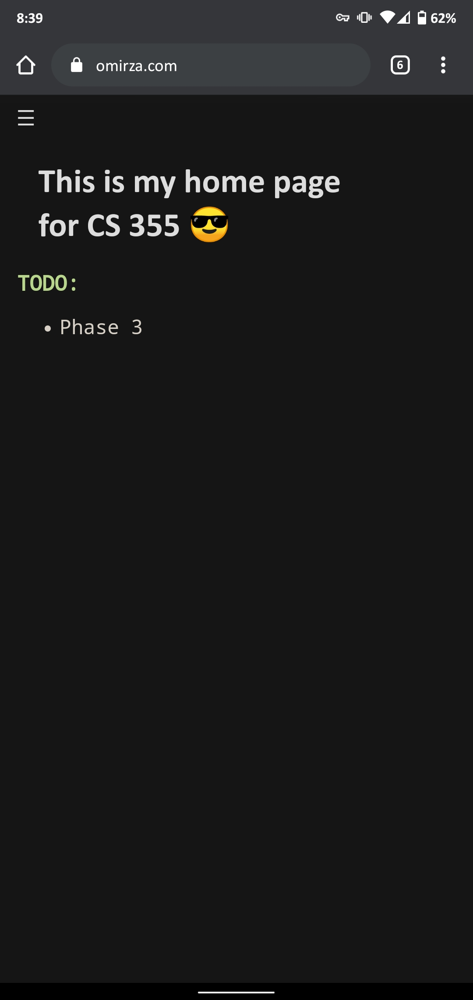
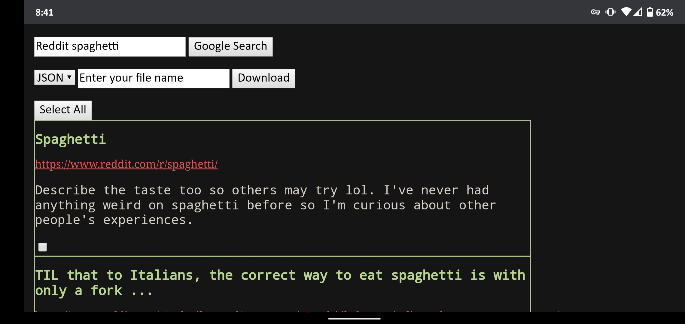

 
“Search And Reporting Application” Features responsive web design, reading from a csv,json,xml file or from a google api call. Writing to a csv,json,xml file. Records all search queries and results and allows user to perform searches on the previous results. Also supports stats for things like unique queries, number of results, date, time, etc. Uses node.js and MySQL
Project for CS 355 Internet and Web Technologies